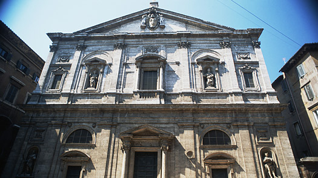
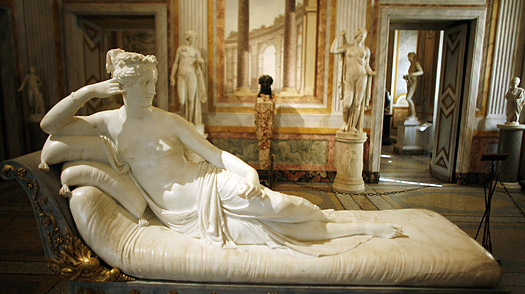
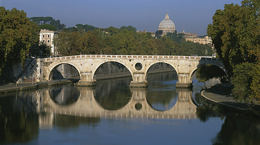
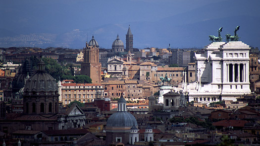
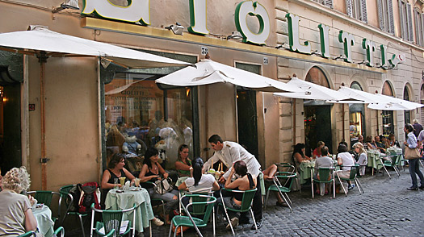

Must See Sites
San Luigi Church
Once you've gotten a taste of Caravaggio, a late Renaissance master whose work is featured at the Galleria Borghese, you can't leave Rome without seeing what many say is his most powerful work. You'll have to go to church to do it.
The Calling of Saint Matthew hangs in the Contarelli Chapel of the San Luigi dei Francesi church, a reminder that 400-year-old art was provocatively modern when it was first conceived. Two other Caravaggio works - St. Matthew and the Angel and the Martyrdom of St.
Matthew - which round out the triptych, are also on permanent display here. Seeing such a renowned work in a church you might otherwise have easily overlooked is proof that Rome really is a living museum.
Galleria Borghese
The original sculptures and paintings in the Borghese Gallery date back to Cardinal Scipione's collection, the son of Ortensia Borghese - Paolo V's sister - and of Francesco Caffarelli, though subsequent events over the next three centuries entailing both losses and acquisition have left their mark.
Cardinal Scipion was drawn to any works of ancient, Renaissance and contemporary art which might re-evoke a new golden age. He was not particularly interested in medieval art, but passionately sought to acquire antique sculpture. But Cardinal Scipione was so ambitious that he promoted the creation of new sculptures and especially marble groups to rival antique works.
The statue of Pauline Bonaparte, executed by Canova between 1805 and 1808, has been in the villa since 1838. In 1807, Camillo Borghese sold Napoleon 154 statues, 160 busts, 170 bas-reliefs, 30 columns and various vases, which constitue the Borghese Collection in the Louvre. But already by the 1830s these gaps seem to have been filled by new finds from recent excavations and works recuperated from the cellars and various other Borghese residences.
Ponte Sisto
The best way to soak up the city - and to find some of the quainter (and more affordable) shops - is to zig-zag from vicolo to vicolo (alley), piazza to piazza. For a good two-hour stroll, start at the bustling Piazza Navona, then head south through Campo dei Fiori, where you'll find cafes and daily food and flower markets, to the beguiling Piazza Farnese, with its pair of fountains and Renaissance palace. From there, continue toward Ponte Sisto. The ponte (bridge) offers a great perspective on the beauty of Rome, with the Gianicolo hill rising to the west and St. Peter's Basilica to the north. Cross the Tiber to arrive in the utterly charming Trastevere neighborhood, where laundry swings overhead and flowers burst from window boxes; your stroll can continue, and the enchantment (and shops) will keep coming.
Janiculum
This is known as the city of seven hills, but actually Rome has more than that. Indeed, the Gianicolo (or Janiculum), the hill that affords the best view of Rome, is west of the Tiber and outside the ancient city, so it's not counted among the ancient seven. Still, it's close to the historic center, just above the Vatican and the Trastevere neighborhood - and the panorama (not to mention the silence) from the top takes your breath away. At noon, the quiet is momentarily broken by the single shot of a cannon, to mark the exact time, a tradition that dates back to the 19th century.
Besides a stunning view of Rome's ancient landmarks, the Gianicolo gives you a quick and slightly more modern history lesson on the Italian Risorgimento, the 19th-century movement (and wars) that unified modern Italy. Busts of the heroes are scattered along the pathways, and looming over everything is a gigantic statue of the great bearded hero Giuseppe Garibaldi on horseback. Viva Italia!
Gelato
Like pizza al taglio, gelato is not hard to find in central Rome. Most of the gelato around here is high quality, but arguably still the best in town is at the famous Giolitti, nestled between the Pantheon and the Italian Parliament. Ask for up to three flavors on a medium cone to go, or sit down at a streetside table and savor every moment. Try bacio, pistachio and nocciola for a creamy, nutty, chocolate-touched delight.